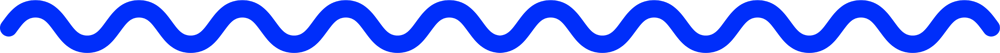
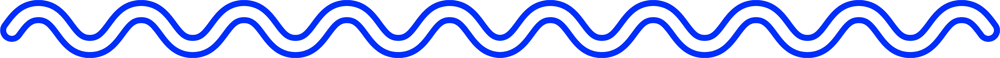

Kasi Kollektive
Empowering underprivileged South African youth with entrepreneurial education
In 2021, South Africa recorded the highest youth unemployment rate in the world, with young people aged 15 to 24 accounting for over half of the total unemployment rate. During an international summer exchange in Denmark, our group developed a dual-approach business model to address this issue.

Project Journey
Quick overview from start to finish
During the 3-week course, 'An Introduction to Social Entrepreneurship', at the Copenhagen Business School, work in teams on a specific social entrepreneurship problem based on one of the 17 United Nations (UN) Sustainable Development Goals (SDGs).
Our group of five was an internationally diverse team, with each member representing a different country: Australia (technically, I also represented Germany), England, Denmark, South Africa, and the United States. Our undergraduate backgrounds were also different, ranging across business, design, law, and marketing.
This diversity proved incredibly useful, as it allowed for multiple perspectives and being able to divide the workload according to our unique strengths.
Our group was formed prior to the course, because we connected over our shared goal of promoting quality education, the fourth Sustainable Development Goal (SDG) of the United Nations (UN).
Our South African team member encouraged us to explore South Africa as a focal point, given his first-hand experiences with the local education system.
Individually, we completed desktop research to better understand South Africa's history and present problems in relation to education. This research was collected through written documents and shared amongst the group in our communication channel.
Key Issues
- Despite abolishment in 1994, Apartheid's long-lasting effects of socio-economic inequality and deep-rooted racism still affect the nation today
- In 2023, poverty affects 47% of Black South African households compared with 1% of Indian, Asian, and White South African households
- Amnesty International outlined that poor infrastructure, untrained teachers, and safety issues gravely affect the education system in a 2020 report
- South Africa's education system is consistently ranked amongst the worst globally
Issue Tree
In order to break down the societal problem of quality education, we asked ourselves, "Why is the education system in South Africa broken?", and formed connections with the researched issues of corruption, poverty, and the long-lasting effects of apartheid through an issue tree.
Inclusion of SDG 8
After completing our desktop research and issue tree, we decided to focus on the relationship between the cycle of unemployment and the poor education system. Therefore, we added the UN's eigth SDG of decent work and economic growth to our business model.
x
Overview
- x
- x
- x
- x
x
Overview
- x
- x
- x
- x
